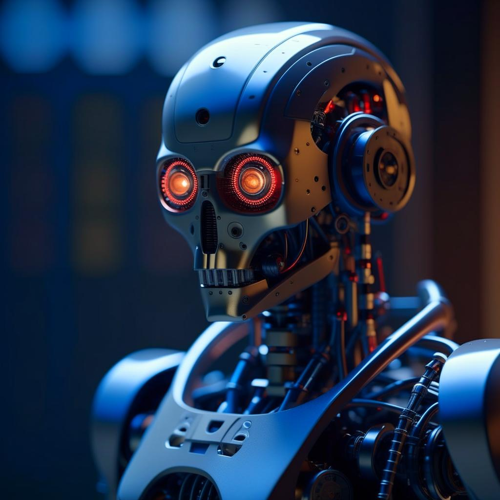

Зарядки за секунды, бессмертные роботы и прорыв в искусственном интеллекте
В мире технологий наступила настоящая эра инноваций и новаций! Компании по всему миру разработали революционные технологические решения, которые обещают изменить нашу жизнь. От зарядок за считанные секунды до бессмертных роботов и прорывов в искусственном интеллекте - давайте взглянем на последние новости из мира технологий.
{kind=link}
Начнем с новости, которая порадует всех владельцев современных гаджетов - компания X разработала зарядку, способную полностью зарядить аккумулятор устройства всего за несколько секунд! Это действительно революционное достижение, которое избавит нас от бесконечных часов ожидания полной зарядки телефонов, планшетов и ноутбуков.
Еще одно важное достижение в мире технологий - создание бессмертных роботов. Компания Y представила прототип робота, который способен существовать бесконечно долго. Это открывает огромные возможности в таких областях, как медицина, эксплорация космоса и даже земледелие. Бессмертные роботы смогут выполнять сложные и опасные задачи без угрозы для человеческой жизни.
{kind=link}
Неотъемлемой частью нашей жизни стал искусственный интеллект. И вот компания Z анонсировала революционный прорыв в этой области - разработку искусственного интеллекта, способного учиться самостоятельно. Вместо программирования со стороны разработчиков, данный искусственный интеллект способен самостоятельно изучать и адаптироваться к новым задачам, что сделает его еще более эффективным и многообещающим инструментом для нашего общества.
Однако, не все новости из мира технологий оказались позитивными. В последнее время появилась информация о росте киберпреступности. Хакеры стали использовать все более сложные и изощренные методы для доступа к личной информации и деньгам пользователей. Это ставит перед отраслью технологий огромную задачу обеспечить безопасность данных и обезопасить нас от киберугроз.
{kind=link}
Таким образом, последние новости из мира технологий показывают огромные прорывы и достижения, которые меняют нашу жизнь. Зарядки за секунды, бессмертные роботы и прорыв в искусственном интеллекте - все это только начало, и мы можем ожидать еще больших открытий и инноваций. Однако, необходимо помнить о важности безопасности данных и борьбы с киберпреступностью, чтобы наше будущее было безопасным и благоприятным.
Статья была выпущена